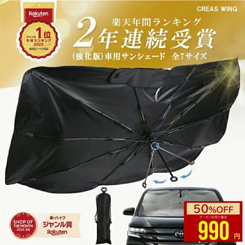
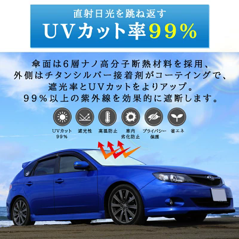
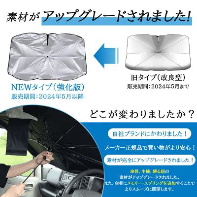
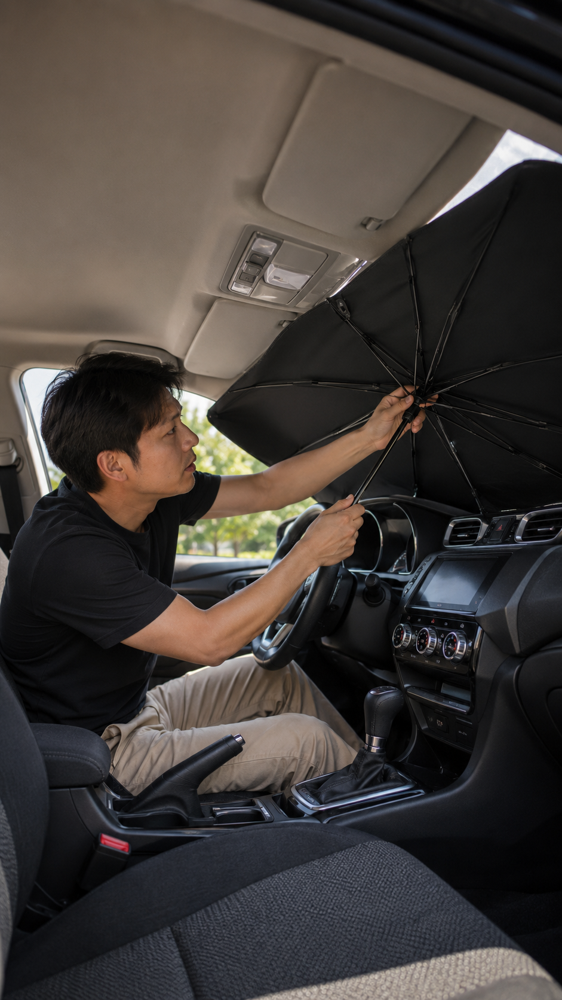

本ページには広告・アフィリエイトリンクが含まれます。紹介内容は楽天の商品ページおよびユーザー提供画像をもとに整理したもので、実使用による評価ではありません。価格・在庫・レビュー件数は変動するため、リンク先で最新情報をご確認ください。
夏の駐車後にドアを開けた瞬間、車内の熱さで乗り込みづらいことはありませんか。強い日差しでハンドルやダッシュボードまで熱くなりやすいのも、車移動のつらいところです。
そこで選択肢のひとつになるのが、傘みたいに開いて使える車用サンシェードです。この記事では、商品ページで確認できた案内をもとに特徴と購入前の確認ポイントを整理します。「必ず車内温度が下がる」「絶対に涼しくなる」といった断定はしません。

この記事はこんな人向け
- 夏の駐車後の車内の暑さが気になる人
- 設置しやすいサンシェードを探している人
- 折りたたみ後の収納性を重視する人
- 購入前にサイズ確認のポイントを整理したい人
この商品の主な特徴
商品ページでは、傘型の車用フロントサンシェードとして案内されています。確認できた案内は次のとおりです。
- 傘のように開いて設置するタイプとして案内されている
- UVカット率99%／紫外線約99%カットの案内がある
- 多層の断熱・遮熱を意識した素材として案内されている
- 強化版や素材アップグレードの案内がある
- 全7種サイズ展開（XS〜XXL・ハイエース向け含む）がある
- 使わないときはコンパクトに収納でき、収納袋付きとして案内されている


価格・ランキング・レビュー件数などの変動情報は断定しません。タイプやサイズの違いは購入前に商品ページで確認してください。
一般的な折りたたみ式サンシェードとの違い
一般的な折りたたみ式サンシェードは、広げてフロントガラスに当てる使い方が中心です。傘型タイプは、商品ページの案内上、傘のように開いて設置し、使わないときはコンパクトに収納できる点が特徴として示されています。
一方で、車種との相性やミラー周りへの干渉は避けられません。開閉のしやすさと収納性を重視する一方で、サイズ適合は通常のサンシェードと同様に確認が必要です。

使いやすそうな場面
商品ページで確認できた案内を踏まえると、次のような場面で候補になりそうです。
- 通勤・通学での屋外駐車
- 買い物や短い外出先での駐車
- 夏のドライブ前後の車内日差し対策
- 屋外駐車場をよく使う日
購入前に確認したいポイント
- フロントガラスの縦横サイズ
- ルームミラー周りの形・干渉の有無
- ダッシュボードやナビとの干渉
- 傘の柄の位置と操作性
- 収納時のサイズ・収納袋の有無
- 対応車種・サイズ展開（XS〜XXLなど）
- 強化版／2層構造などのタイプ差
- 商品ページの最新仕様・注意書き
向いていそうな人
- 車移動が多い人
- 設置しやすいサンシェードを探している人
- 折りたたみ後の収納性を重視する人
注意点
- 車種によって適合しない場合があります
- 完全に車内温度上昇を防ぐものではありません
- 小さな子どもやペットを車内へ残さないでください
- 運転前に必ず取り外してください

まとめ
傘型車用サンシェードは、開いて設置し、使わないときはコンパクトに収納できる点が特徴です。商品ページではUVカット率99%や強化版・サイズ展開などの案内も確認できます。
この記事は未購入商品を、商品ページ情報をもとに整理した紹介です。最新仕様・価格・在庫はリンク先で確認し、自分の車に合うサイズかどうかを優先して判断してください。